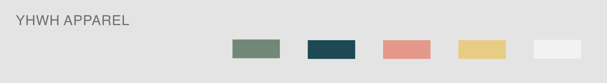
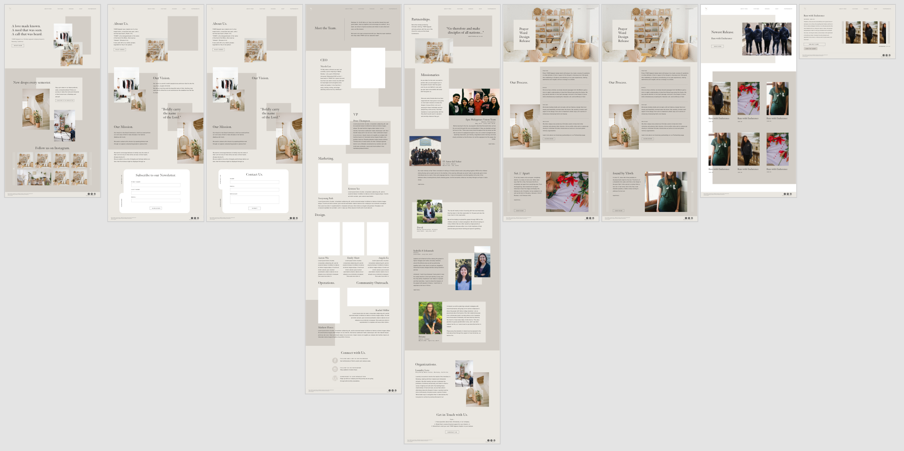
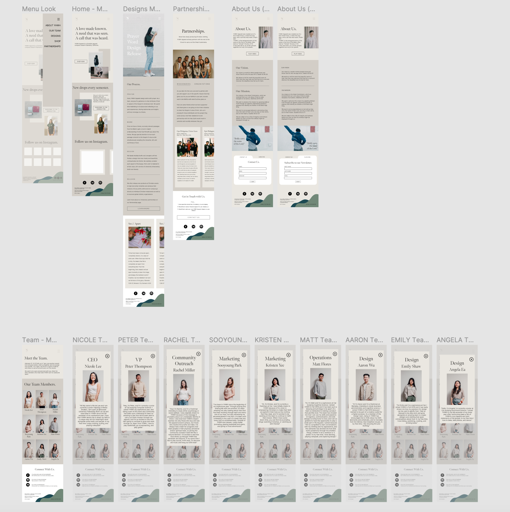

Design and Wirefame
Originally being apart of the Web Development team, Peter and I were handed a completed desktop wireframe from
Emily and were able to work directly from it. The most important things were to keep the color scheme and general
feel the same, so we could move elements around slightly to make it easier on us as we worked on the code
structure. While our main color was neutral browns, we were given a collection of possible accent colors, seen
below.

When the time came to begin work on the responsive design for both mobile and tablet platforms, I was apart of
a 4-person summer team. This meant I worked on both web development and design, so I was able to work in
collaboration
with Emily to create the wireframes for the mobile and tablet screens using both Adobe XD and Figma. The tablet
screens
for the most part were the same as the desktop screen but had a few adjustments to fit the sizing and touch
screen.
However, the mobile screens went through a more drastic change to fit the screen size adjustment. We had to
simplify
elements like our logo and navigation bar, team page, and designs page, among others, in order to better display
all
our information effectively on this platform.

Desktop Web Development (Fall 2019)
Being one of two members in the Web Development Team, I collaborated with my superior and mentor, Peter, to
learn more about the web development process. I began shadowing and observing him as he worked on the home page,
and then began working on my own respective pages once I gained confidence. We began by working on the same
laptop,
but as I gained more independence throughout the project, we moved to separate computers and used GitHub as our
main method of collaboration. We utilized HTML, CSS, and JavaScript, relying heavily on the React library.
We worked first on shared components that would be shared on every screen, such as the navigation bar, logo, and
footer, as well as more complex components that we decided to put in their own file, such as our design carousel.
After, we began work on each of the individual pages, where I was responsible for the team and partnership pages.
In the wireframe handed to us, we found these colored rectangle boxes that floated in seemingly random positions
that
added dimension and color. We had issue in trying to implement these as images, and so we used basic problem
solving
to figure out that we could use empty image containers as color blocks. The whole process was filled with problem
solving
and constant web research, since we were both somewhat new to Web Development, but we ended up quite happy with
the
end product for the Desktop screens.
Responsive (Mobile and Tablet) Web Development (Summer 2020)
The Web Development team pushed back this portion of the project until the summer due to COVID-19 and the shock
it
left the team, since we were all college students at UC Berkeley who were suddenly returning to our respective
homes.
However, after the Spring 2020 semester had come to a close, we felt as a team that we were adjusted to this new
work
environment and were able to resume this project. With a smaller summer team, the new design and web development
side
team consisted of Emily, Peter, and me. As mentioned above, Emily and I collaborated to make the wireframes on
Figma
for the new mobile and tablet pages. Once approved, we as a team used notion to delegate tasks and keep us well
organized/managed.

Once tasks were delagated, we were off to work and once again utilized GitHub to collaborate, but also used
Slack
as a way to communicate effectively, as to minimize merge conflicts. I was first tasked with working on the mobile
navigation bar, where it would be a tap-to-trigger "hamburger" menu that would trigger a column of screen options
on
the right side of the screen and redesigning the logo used to navigate to the home page (no text, just the "y"
logo).
My teammates worked on other components like the footer and the selectable scroll function. Once all shared
components
were fully implemented, we then began work on the actual screens. I was responsible for the home page and team
page. For
the most part, I kept the home page pretty faithful to the original desktop screen, but I made heavy altercations
to
the team page to better fit the mobile screen. At first glance, each member's profile image is viewable. Each
image is
then tappable to trigger an overlay box that displays each member's respective "bio" and profile. After we
finished
building the separate components and screens, we stitched all the pages together using media queries to select a
screen based off of the user's screen pixel dimensions.
To view the final product, please click on this link.